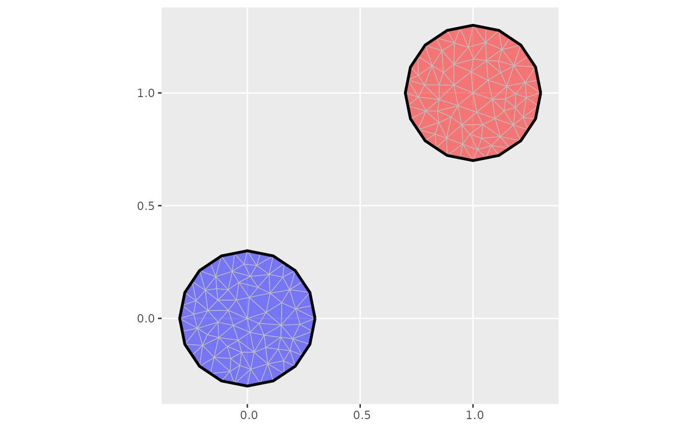

Compute subsets of vertices and triangles/tetrahedrons in an fm_mesh_2d or fm_mesh_3d object that are connected by edges/triangles.
Usage
fm_mesh_components(mesh)
# S3 method for class 'fm_mesh_2d'
fm_mesh_components(mesh)
# S3 method for class 'fm_mesh_3d'
fm_mesh_components(mesh)Arguments
- mesh
An fm_mesh_2d or fm_mesh_3d object
Value
A list with elements vertex and triangle/tetra, vectors of
integer labels for which connected component they belong, and info, a
data.frame with columns
- component
Connected component integer label.
- nV
The number of vertices in the component.
- nT
The number of triangles/tetrahedrons in the component.
- area/volume
The surface area or volume associated with the component. Component labels are not comparable across different meshes, but some ordering stability is guaranteed by initiating each component from the lowest numbered triangle whenever a new component is initiated.
Author
Finn Lindgren finn.lindgren@gmail.com
Examples
# Construct two simple meshes:
loc <- matrix(c(0, 1, 0, 1), 2, 2)
mesh1 <- fm_mesh_2d(loc = loc, max.edge = 0.1)
bnd <- fm_nonconvex_hull(loc, 0.3)
mesh2 <- fm_mesh_2d(boundary = bnd, max.edge = 0.1)
# Compute connectivity information:
conn1 <- fm_mesh_components(mesh1)
conn2 <- fm_mesh_components(mesh2)
# One component, simply connected mesh
conn1$info
#> component nV nT area
#> 1 1 58 74 0.2165685
# Two disconnected components
conn2$info
#> component nV nT area
#> 1 1 81 128 0.2754906
#> 2 2 84 134 0.2754906
# Extract the subset mesh for each component:
# (Note: some information is lost, such as fixed segments,
# and boundary edge labels.)
mesh3_1 <- fm_rcdt_2d_inla(
loc = mesh2$loc,
tv = mesh2$graph$tv[conn2$triangle == 1, , drop = FALSE],
delaunay = FALSE
)
mesh3_2 <- fm_rcdt_2d_inla(
loc = mesh2$loc,
tv = mesh2$graph$tv[conn2$triangle == 2, , drop = FALSE],
delaunay = FALSE
)
if (require("ggplot2")) {
ggplot() +
geom_fm(data = mesh3_1, fill = "red", alpha = 0.5) +
geom_fm(data = mesh3_2, fill = "blue", alpha = 0.5)
}
#> Warning: fm_as_sfc currently only supports (multi)linestring output
#> Warning: fm_as_sfc currently only supports (multi)linestring output

(m <- fm_mesh_3d(
matrix(c(1, 0, 0, 0, 1, 0, 0, 0, 1, 0, 0, 0), 4, 3, byrow = TRUE),
matrix(c(1, 2, 3, 4), 1, 4, byrow = TRUE)
))
#> fm_mesh_3d object:
#> Manifold: R3
#> V / E / T / Tet: 4 / 6 / 4 / 1
#> Euler char.: 1
#> Bounding box: (0,1) x (0,1) x (0,1)
#> Basis d.o.f.: 4
# Compute connectivity information:
(conn <- fm_mesh_components(m))
#> $vertex
#> [1] 1 1 1 1
#>
#> $tetra
#> [1] 1
#>
#> $info
#> component nV nT volume
#> 1 1 4 1 0.1666667
#>